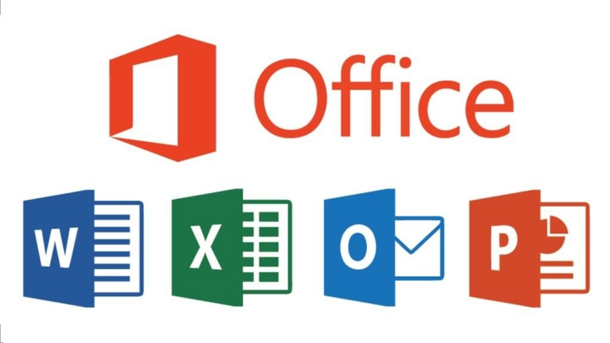

O que é o Pacote Office?
O Microsoft Office, ou simplesmente Office, era um pacote de aplicativos para escritório e serviços, desenvolvido pela Microsoft. Contém programas como processador de texto, planilha de cálculo, banco de dados, apresentação gráfica, cliente de e-mails, entre outros. Foi anunciado pela primeira vez por Bill Gates em 1° de agosto de 1988 na Comdex, em Las Vegas. Sua primeira versão continha os aplicativos Microsoft Word, Microsoft Excel e Microsoft PowerPoint. Ao longo dos anos, os aplicativos Office receberam recursos compartilhados, como um corretor ortográfico único, entre outros. O Office é produzido em várias versões direcionadas a diferentes usuários finais e ambientes computacionais. A versão original, e a mais amplamente utilizada, é a versão desktop, disponível para PCs rodando os sistemas operacionais Windows e macOS. A Microsoft também mantém aplicativos móveis para Android e iOS, além de uma versão do software que roda dentro de um navegador web, Office Online. Desde o Office 2013, a Microsoft promove o Office 365 como o principal meio de obtenção do Microsoft Office: ele permite o uso do software e outros serviços em um modelo de negócios por assinatura, e os usuários recebem atualizações de recursos do software durante a vida útil da assinatura, incluindo novos recursos e integração de computação em nuvem. Em 2017, a receita do Office 365 ultrapassou a venda de licenças convencionais. A Microsoft também mudou a nomenclatura da maior parte de suas edições do Office 365 para Microsoft 365, para enfatizar sua atual inclusão de produtos e serviços. A versão atual do Office desktop é o Office 2019, lançado em 24 de setembro de 2018. Há também as versões comerciais como: Home & Student, Home & Business, Pro, Pro Plus e Standard. Em outubro de 2022, a Microsoft anunciou que o aplicativo ''Office'' se tornará ''Microsoft 365'', com um novo ícone, um novo visual e ainda mais recursos. As mudanças começarão a ser lançadas para o site Office.com em novembro de 2022 e para o aplicativo Office no Windows e no aplicativo móvel office em janeiro de 2023.
O que vamos aprender?
Vamos fazer uma introdução ao conteúdo dos seguintes tópicos:
Por que eu devo aprender sobre o pacote office?
Certamente, você deve estar pensando: Mas será que vale a pena investir em um curso de Pacote Office? Independente da sua área de atuação profissional, o Pacote Office se tornou uma das principais ferramentas para o mercado de trabalho. Quem faz um curso de Pacote Office, pode comprovar o seu conhecimento e sair na frente na disputa por uma vaga de emprego. O curso de Pacote Office é voltado para as necessidades do ambiente corporativo e doméstico. Isso significa que o curso Pacote Office, serve para quem deseja turbinar a carreira ou para as pessoas que precisam desenvolver trabalhos acadêmicos ou pesquisas escolares.
Se você ainda está na dúvida, vou listar apenas 06 motivos porque valem a pena investir em um curso de Pacote Office.
Espero que você aprenda muito com nossas aulas!